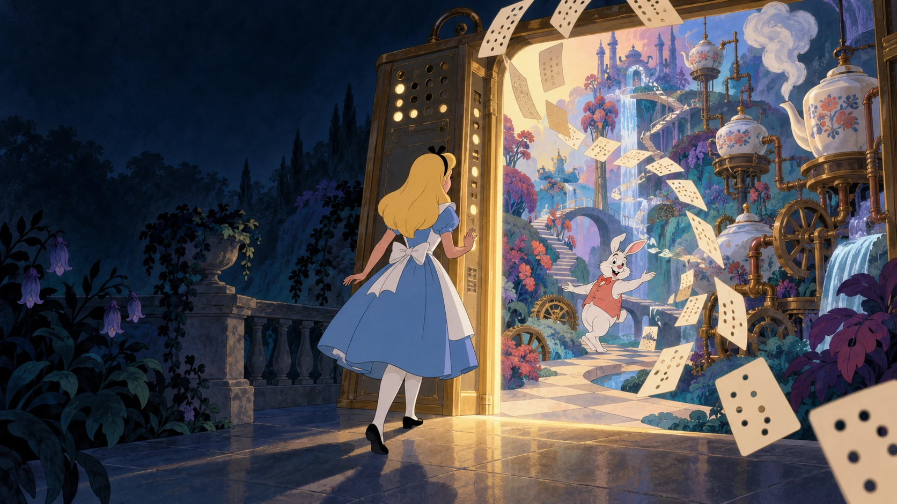
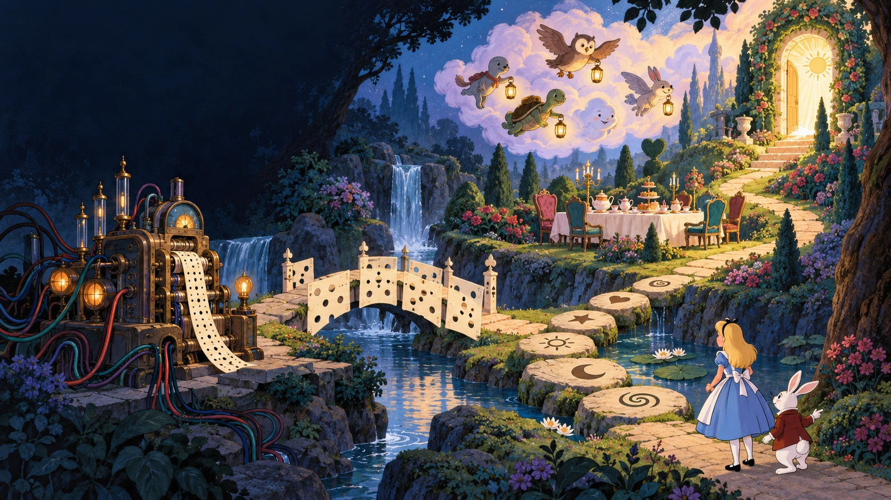
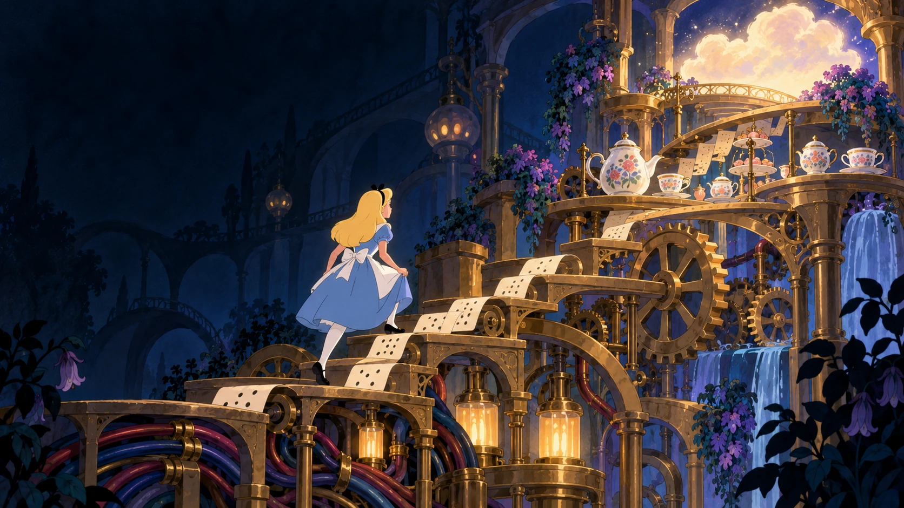
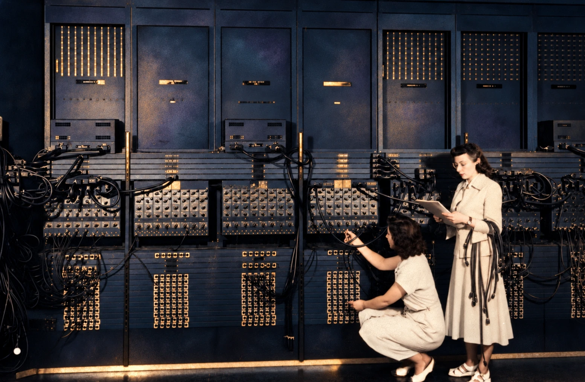
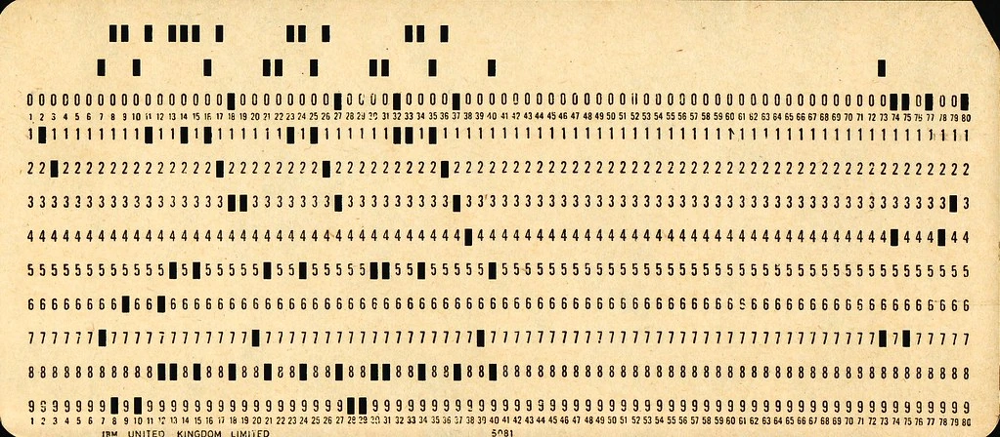
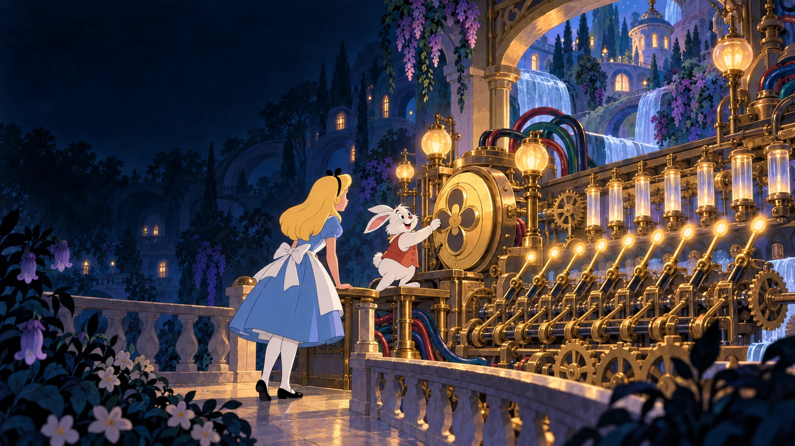
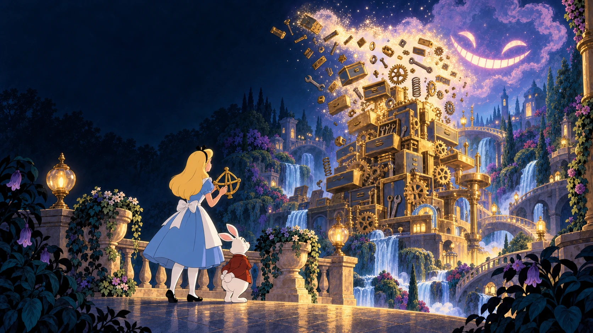

ENGINEERING / ORIGINAL EDITION
From Opcode
to Intent
There is no way back.
From programming the machine
to expressing intent.

AI-generated illustration · Credits
YOUR PRESENTERS
Two voices.
One engineering question.
Michael
Dima
Dorogoi
What do we still need to decide when implementation becomes easier to delegate?
AGENDA / TALK + Q&A
A short history
of saying less.
- 01The compression detour
- 02Machines, cards and languages
- 03Words with more context
- 04Models and moving bottlenecks
- 05Intent, constraints and verification
- 06Running to keep up
- 07Questions & discussion

AI-generated illustration · Credits
THE COMPRESSION DETOUR
How much fits in a word?
A short expression can unlock a much larger structure.
A short name works through a shared definition.
AI-generated illustration · Credits
ABSTRACTION

Every level hides a little more
Higher abstractions let us delegate more implementation detail.
AI-generated illustration · Credits
PHYSICAL PROGRAMS

When the program was the machine
Dependency injection—with actual cable injection.
Archival ENIAC photograph · AI-assisted colorization · Credits
PORTABLE PROGRAMS
The program leaves the machine
Punched cards make instructions tangible—and portable.
AI-generated illustration · Credits
ENCODING

Small patterns, agreed meanings
An agreed encoding turns a pattern of holes into data or instructions.
Punched-card photograph · CC BY 3.0 · Credits
SYMBOLIC INSTRUCTIONS

Assembly gives the machine words
Names replace numeric opcodes; the work stays close to the hardware.
AI-generated illustration · Credits
HIGHER-LEVEL LANGUAGES
Bigger building blocks
FORTRAN, C and Ada move us beyond individual machine instructions.
AI-generated illustration · Credits
DECLARATIVE PROGRAMMING
SQL: ask for the result
Describe the data you want; let the database choose a plan.
AI-generated illustration · Credits
SHARED CONTEXT
There is a world behind a word
Short requests rely on knowledge that is not written in the request.
AI-generated illustration · Credits
MODELS AND AGENTS
From answers to actions
Models, context and tools turn a request into a working process.
AI-generated illustration · Credits
HIDDEN IMPLEMENTATION

The loop follows the register
Details leave our everyday vocabulary—not the running system.
AI-generated illustration · Credits
THE HARD PART
“Build me a Git client.”
One short request. A product's worth of unstated decisions.
“The hard thing about building software is deciding what one wants to say, not saying it.”
Frederick P. Brooks Jr. · No Silver Bullet
AI-generated illustration · Credits
THE BOTTLENECK
The bottleneck moves
When implementation gets cheaper, deciding and checking matter more.
AI-generated illustration · Credits
THE DEVELOPER'S WORK
The toolkit changes
Framing, architecture and verification become more prominent.
Not less engineering.
A different balance of engineering work.
AI-generated illustration · Credits
THE INTERFACE
The interface is human language
Conversation opens the door; explicit constraints keep it useful.
AI-generated illustration · Credits
INTENT-DRIVEN DEVELOPMENT
The Last Abstraction?
The next programming language is intent.
Wires → Machine Code → Assembly → C → C++ → SQL → Frameworks → Prompts → Intent
A conceptual progression—not a strict chronology.
We used to tell computers HOW.
Now we increasingly tell them WHAT.
One symbol carries more and more meaning.
“Build me a reliable distributed service that does X.”
IMPLEMENTATION
C# · SQL · tests
Docker · CI/CD
infrastructure
documentation
And this is not the end of abstraction.
THE RED QUEEN
There is no last abstraction.
The climb continues.
“It takes all the running you can do, to keep in the same place.”
The Red Queen · Lewis Carroll, Through the Looking-Glass
AI-generated illustration · Credits
QUESTIONS & DISCUSSION
Q&A
What should we keep explicit?
Intent
What did we forget to ask?
Evidence
What would convince us it works?
Judgment
What should remain a human decision?
THANK YOU FOR THE CONVERSATION
Thank you.
Less code. More meaning.
More responsibility.
Michael Zemskov · Dima Dorogoi